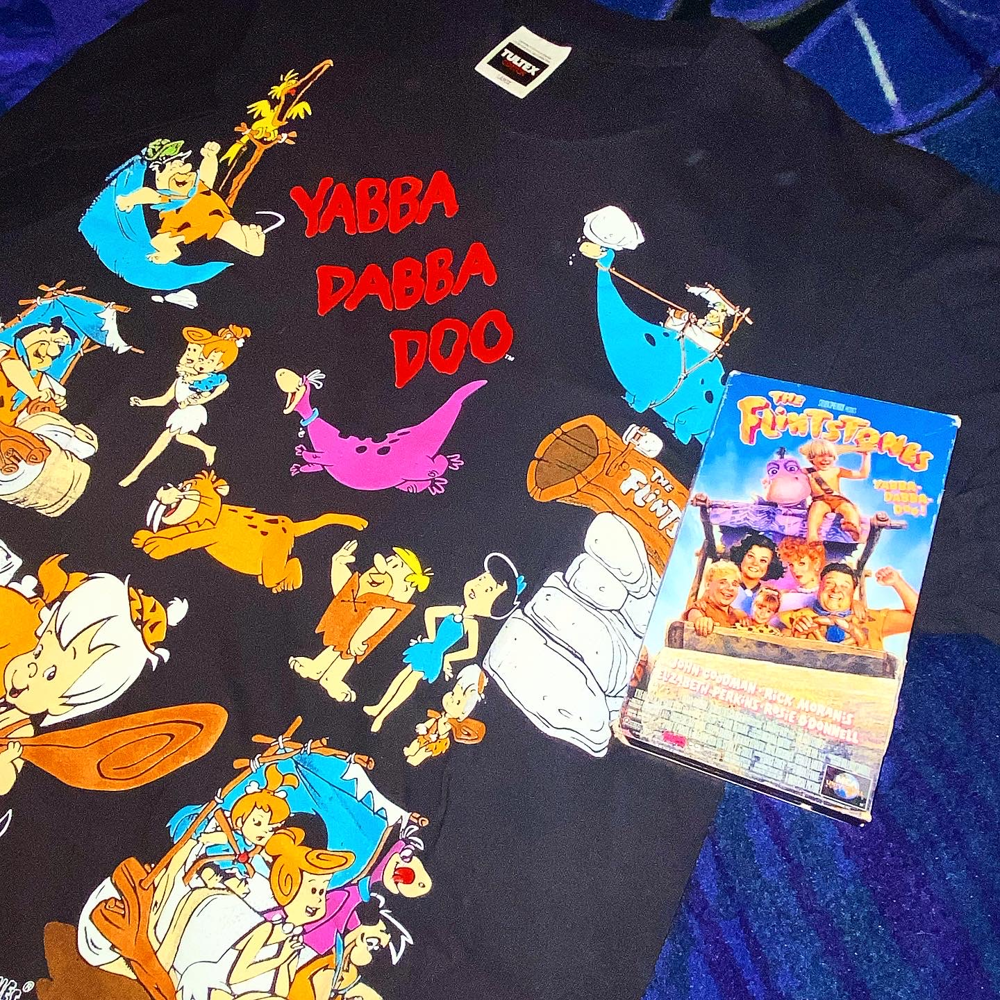
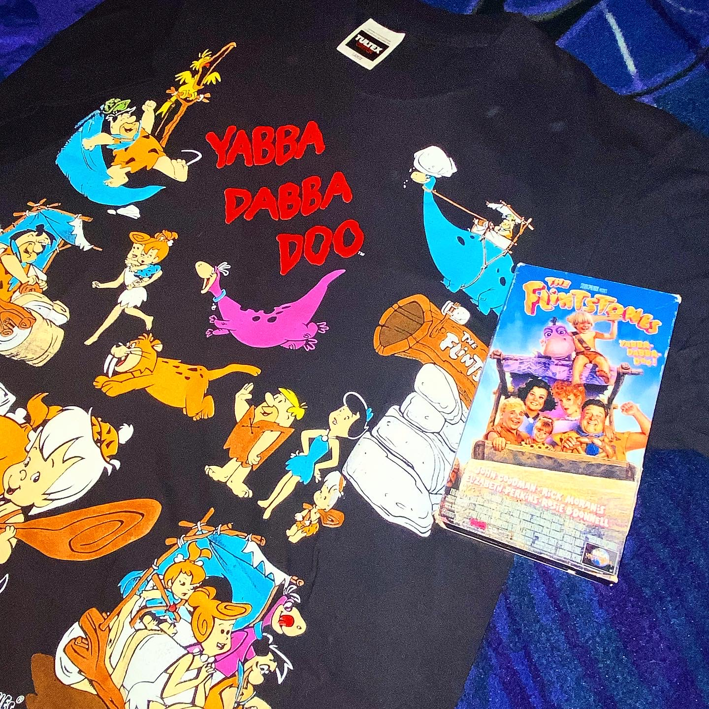
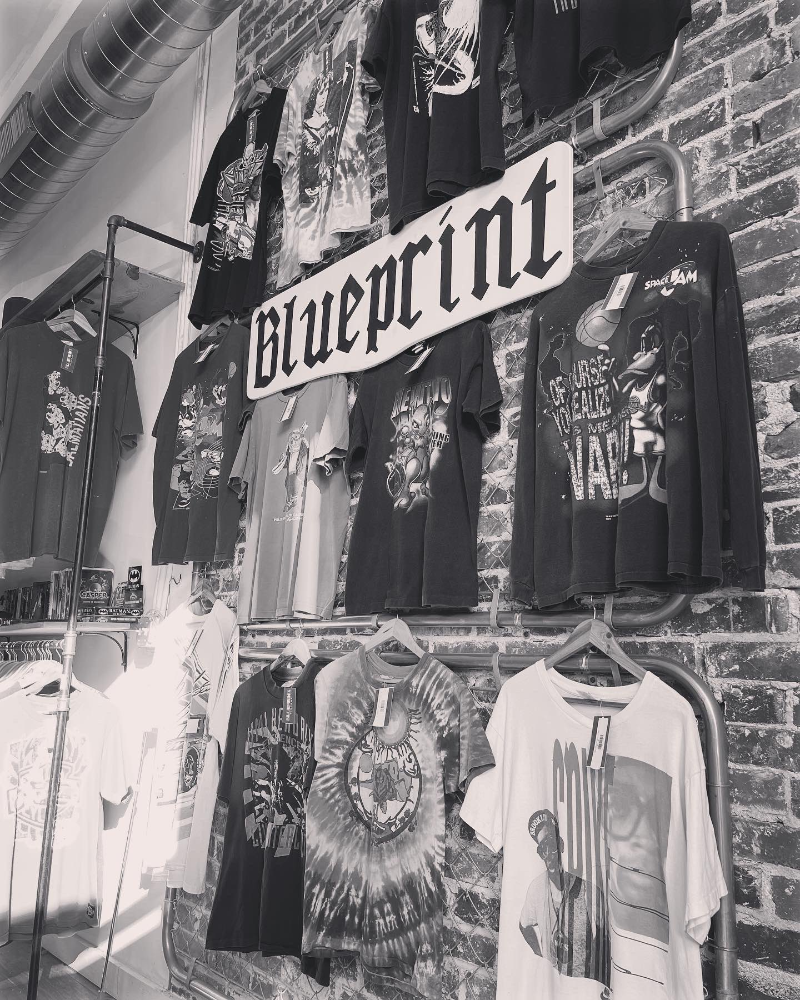
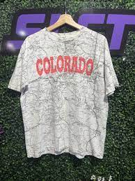

Vintage Montage
This page is going to highlight my adventures and travels to different thrift/vintage shops across the state of Colorado! So please, follow along as I highlight some of the best finds and best places to shop!
 |

|

Starting off at homebase! AKA Denver!!
Colorado is a stronghold in the vintage community, boasting the most Goodwill locations within a single state. To top that off we have a solid base of vintage shops that are worthwhile, with a total of about 21 in all! Scattered across the state you can find a whopping 10 of these shops in the downtown area! Another three can be found in the Aurora/Centennial areas and finally, you can find the rest in the boulder and surrounding areas. There are a number of other shops I haven't listed but that's for you to find on your own! I've given you the perfect places to investigate and ask for the missing locations!
- SLCT Stock Co.
- Scout Vintage
- Ten Penny Store
- La Lovely Vintage
- Boss Vintage
- Blueprint/Vices
- Fourth Place
- Meek Vintage
- Strawberry Mountain
- Culture Street
- Big Sky Supply
- Thrift Cult
- Darklands Vintage

The Big Three
In the list above, I put down what I call "The Big 3". If you're into vintage, you've probably already been to all 3 locations. Slct Stock CO, Blueprint and Culture Street.
Blueprint
Blueprint is a vintage shop in the heart of downtown. Located at 613 22nd Street, Denver, CO 80205. This shop is a hotspot for fresh pieces that display an array of all over prints, tye-dye, and the more rare grapics. This shop is a heckler for trades, wanting only the best you have or noting at all. Considering the rarity of most pieces they have, they have pretty fair prices and killer bundle deals. This shop also features a barbershop so you can go in get a cut and come out looking fresh with a new fit.
SLCT Stock CO
Select is a little far out of the city's reach in the heart of Boulder. You can find this shop at 1140 13th St. Boulder, CO, 80302. This shop will gladly accept most trades you have, so long as it's vintage. They have a premier Ten Dollar Rack that changes daily and they also give the most "in store" credit of the Big Three. They frequently get slept on pieces so don't hesitate to stop by!
Culture Street
Located in Park Meadows mall, 8429 Park Meadows Center Dr, Ste 125, Lone Tree, Colorado. Culture street is a rapidly growing hypebeast shop that has the budget to buy almost any decent piece. They offer the most fair prices of the big three and are just learning their vintage so they're eager for new pieces to come through the door. They offer a wide variety of sneakers, designer and streetwear, with a reputable vintage game due to my help with knowledge in that area. Be ready to spend when you visit this store, as they're sure to have something that you want!

Support Your Local Vintage Resellers!
It's good to appreciate your local Goodwills and shops but if you're looking to join the vintage community, support your local resellers too! As a collector, I can vouch for the amount of time it takes just to snag one piece that someone might call a "gem". So if a piece is nice but high in price, I suggest you start hunting for some trades! Keep in mind, they put a lot of time into finding good pieces so they won't be haggled easily, but that doesn't mean not to try! They're good people though so you'll most likely get a good snipe with any one of them!


START WEARING VINTAGE!
When asked if you wear vintage, most people assume I mean tattered clothes and hand me downs. In the modern wave, we're trying to set the bar to be focused on local resellers rather than live auctions. One thing's forsure, you'll spend less. Meaning you'll be able to hunt more or buy more, keeping the works of wearable art preserved; rather than landfilled. There's always enough vintage to go around! Thank you for following me on this journey!
Developed by: Deven Garcia
Date: 9/15/21 Class Project